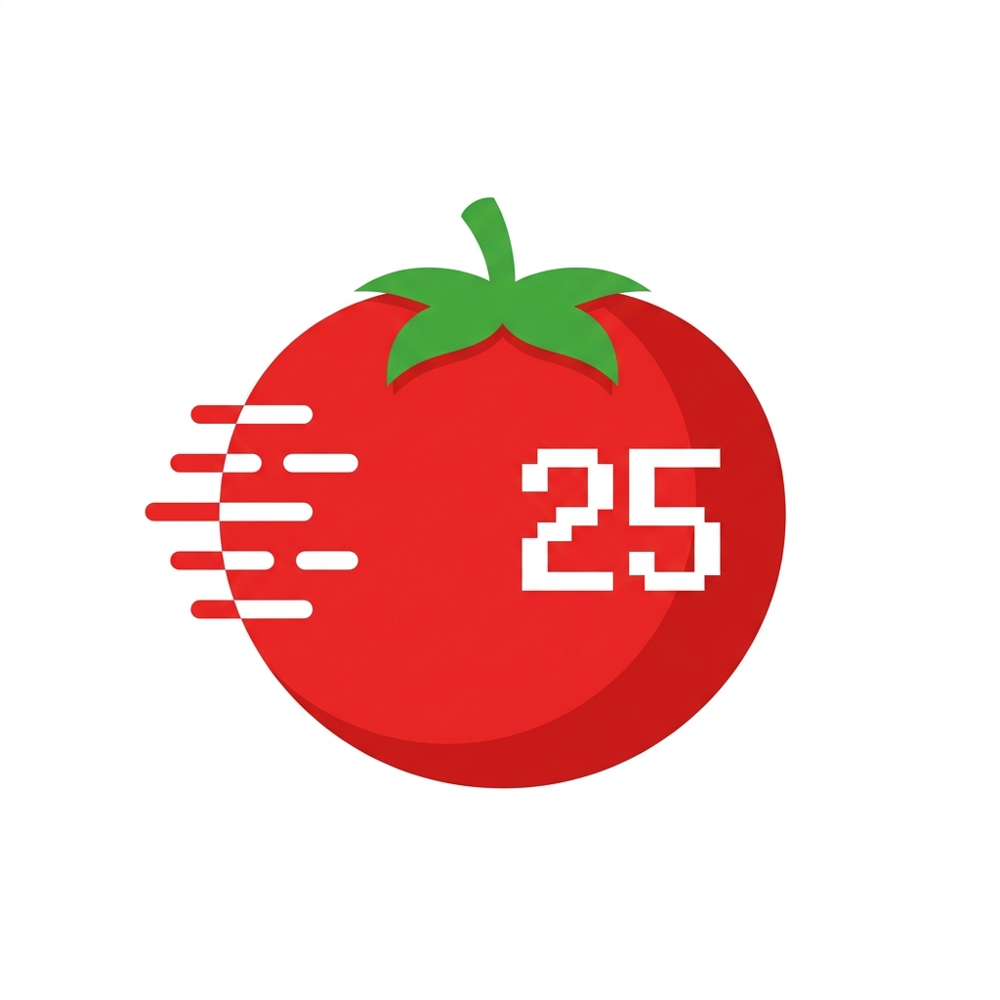

PMDR
by aws86
Kerja
Istirahat Pendek
Istirahat Panjang
25:00
25:00
SEDANG FOKUS
—
Pengaturan
Tema Aplikasi
Suara Alarm
Default Notif
Notif 2
Notif 3
Notif 4
Selalu di Atas
Durasi Kerja (mnt)
Istirahat Pendek (mnt)
Istirahat Panjang (mnt)
Sesi hingga Istirahat Panjang
Reset Siklus Pomodoro
Reset Sesi
Pengatur Waktu Pomodoro Premium untuk produktivitas maksimal.
© 2026
AWS86 - Yours IT Solution
Riwayat
Waktu Habis!
Sesi Anda telah selesai.
OK